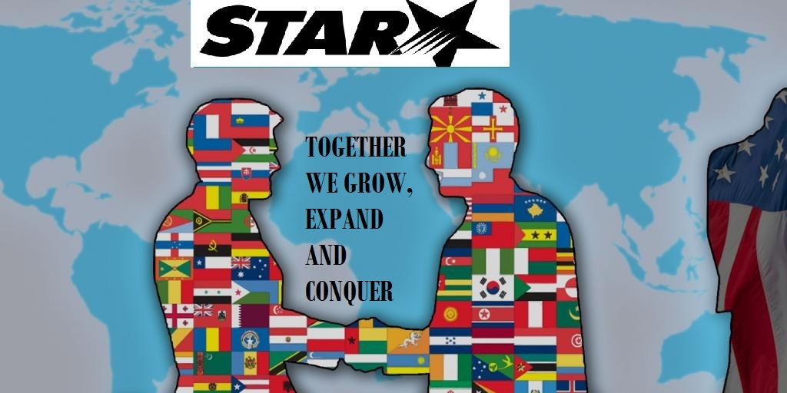

<!DOCTYPE html>
<html>
<head>
<link href="https://fonts.googleapis.com/css2?family=Bebas+Neue&display=swap" rel="stylesheet"> 
<link href="styles/style.css" rel="stylesheet">
<meta charset="utf-8">
<title>STAR-MARKETING</title> 
</head>
<body>

<style>
body {
  background-image: url('images/space.jpg');
}
</style>
</head>
<body>

</body>
</html>
<!DOCTYPE html>
<html>
<head>
<style>
body {
background-image: url('images/977.jpg');
background-repeat: no-repeat;
background-attachment: fixed;  
background-size: cover;
}
</style>

<h1>Star Marketing, you are never alone.</h1>



<p>No human was made to be alone hence the is star marketing, like the wedding vows,"we will be 
with you in tough times through to the happy ones" becouse together we grow, expand and conquer</p>

<h3>WHAT DOES STAR MARKETING DO?</h3>
<P>


<p>Star marketing is a strategic company that takes an ordinary business and turn it into one of the big players in the industry of business. We do this through:</p>

<h4>1. Social media.</h4>
         


<H4>2. Internet.</H4>


<h4>3.The old fashion way:</h4>


<p>which is having our people on the ground distributing flyers; this is because not everyone has social media or internet.</p>

<h4>4. We look on your income and expenditure:</h4>
        
<p>in this way we are able to see where the problem is exactly for example: the problem may be the income, how so you ask? Well the answer is that sometimes business run on survival mode where there’s  no much profit and by profit I refer to the money after all the deductions including the salaries, tax, and stock (if applicable).</p>


<h4>the 5th and final one is communication and connecting:</h4> <p>what is this you may ask?, ‘communication and connecting’ is a business community. Where all both small and large businesses meet, share and advice each other on how to grow a business. Hear from people who once been in your shoes, avoid to make the very same business mistakes as they did and save time and money. STAR MARKETING: YOU ARE NEVER ALONE. 
<strong>REMEMBER: TOGETHER WE GROW, EXPAND AND CONQUER</strong></P>


<p>go to the link below to learn more about marketing, what is it?, what it does?, what are the types of marketing? and more.</p>
 
<p>
<a href="https://en.wikipedia.org/wiki/Marketing">marketing information</a>
</p>
 
<p>
Page written by:
</p>

<p>
  <li>Nkwenkwezi Dlakadla</li>
    <li>Johannesburg</li>
    <li>Gauteng</li>
    <li>SA</li>
</p>

<p>
<li>Tel: 083 857 7341</li>
<li>Email: nkwenkwezistar12@gmail.com</li>
</p>

<button>Change user</button>

<script src="scripts/main.js"></script>
</p>
</body>
</html>
